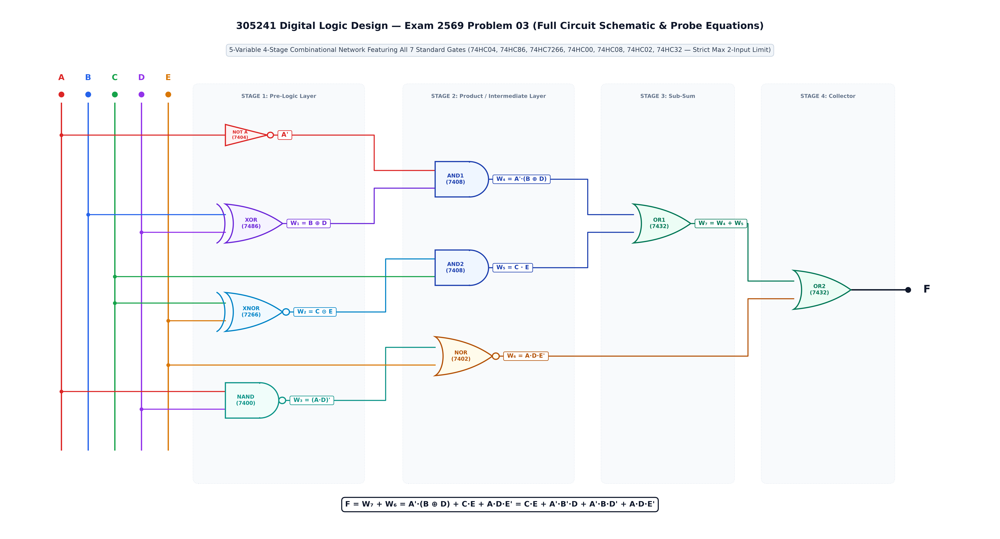
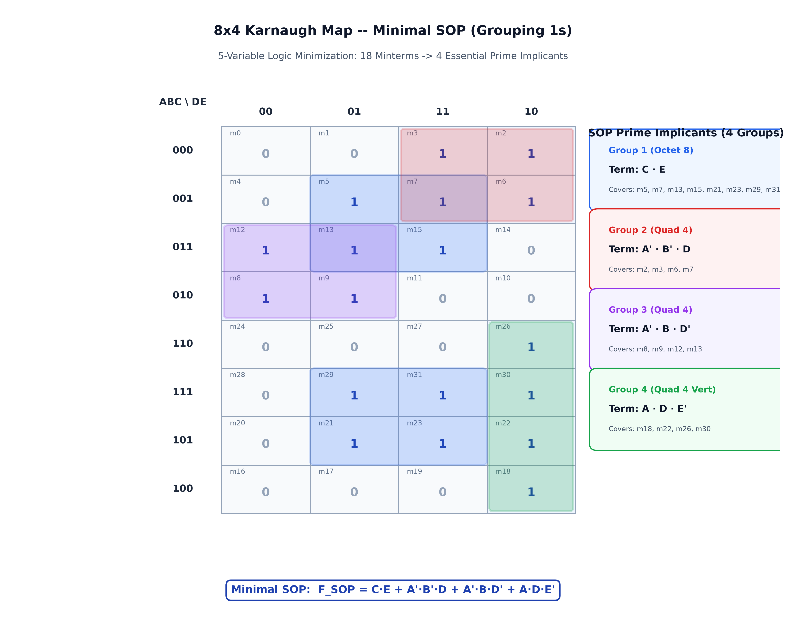
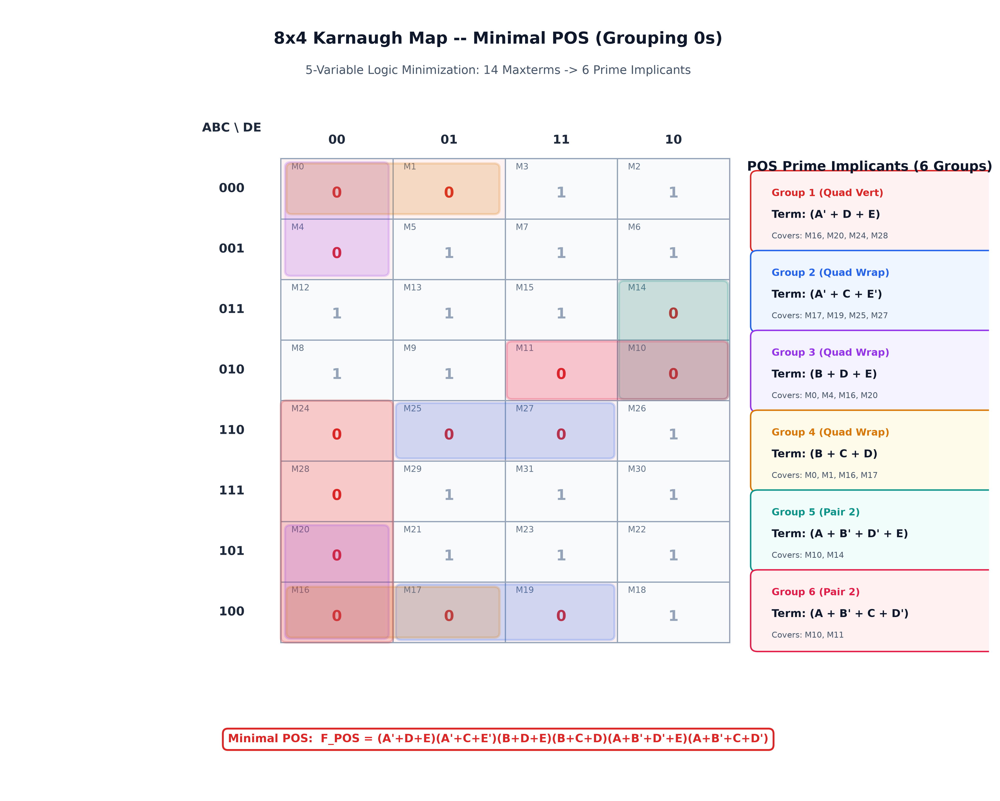
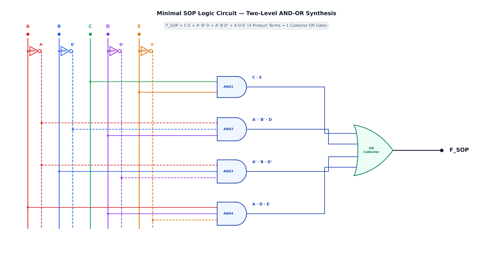
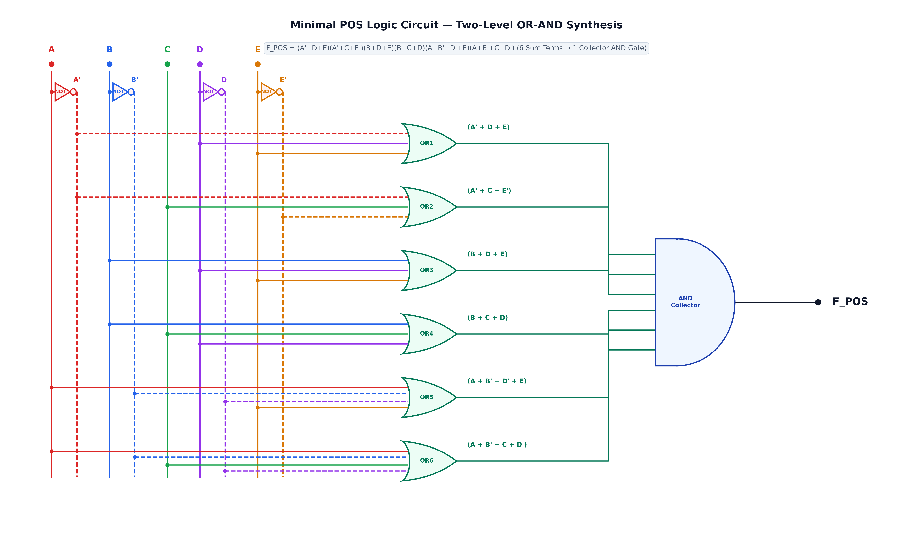
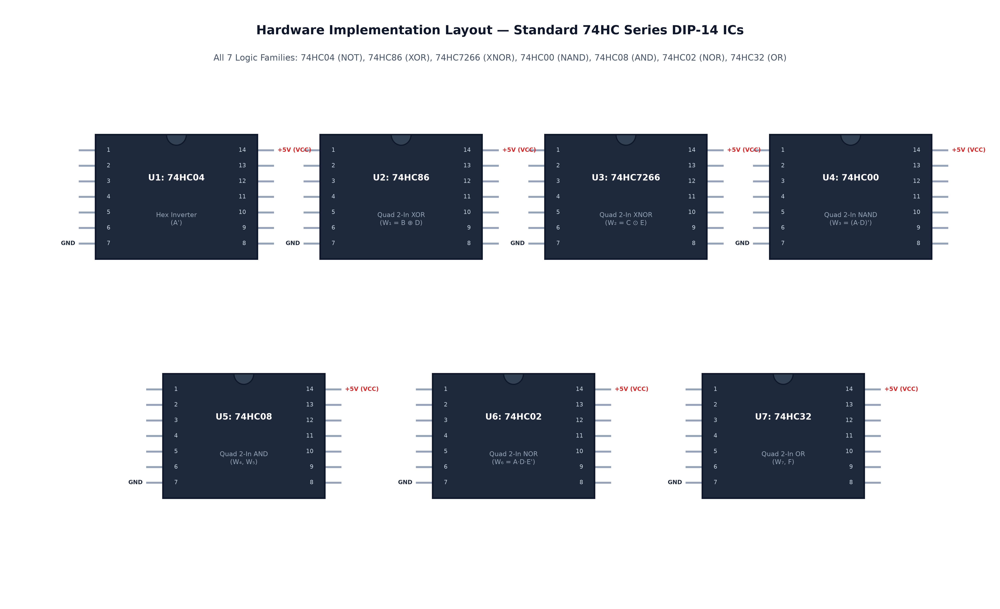

กำหนดวงจรลอจิกเชิงผสม 5 ตัวแปร (A, B, C, D, E) ดังแสดงในผังวงจรด้านล่าง:

โครงสร้างการเชื่อมต่อของวงจร 4 ระดับ (Stage 1 ถึง 4):
A → ได้สัญญาณเอาต์พุต A'B, D → ได้สัญญาณเอาต์พุต W₁ = B ⊕ D = B'·D + B·D'C, E → ได้สัญญาณเอาต์พุต W₂ = C ⊙ E = (C ⊕ E)' = C'·E' + C·EA, D → ได้สัญญาณเอาต์พุต W₃ = (A · D)' = A' + D'A', W₁ → ได้สัญญาณเอาต์พุต W₄ = A' · (B ⊕ D) = A'·B'·D + A'·B·D'W₂, C → ได้สัญญาณเอาต์พุต W₅ = (C ⊙ E) · C = C · E (คุณสมบัติการดูดกลืน XNOR!)W₃, E → ได้สัญญาณเอาต์พุต W₆ = (W₃ + E)' = ((A · D)' + E)' = A · D · E' (กฎเดอมอร์แกน)W₄, W₅ → ได้สัญญาณเอาต์พุต W₇ = W₄ + W₅ = A'·(B ⊕ D) + C·EW₇, W₆ → ได้ฟังก์ชันเอาต์พุตสมบูรณ์ F = W₇ + W₆ = A'·(B ⊕ D) + C·E + A·D·E'คำถามท้ายข้อสอบ:
คลิกสวิตช์อินพุต A, B, C, D, E เพื่อทดสอบการทำงานของลอจิกเกตแต่ละระดับแบบเรียลไทม์
ระบบจะคำนวณจุดโพรบสัญญาณภายใน (Internal Probes) ทั้ง 4 ระดับ และตรวจสอบความเทียบเท่า 100% ระหว่างวงจรเริ่มต้น, Minimal SOP และ Minimal POS:
การประเมินค่าฟังก์ชันลอจิกครบทั้ง 32 กรณี (2⁵ = 32 แถว) จากการคำนวณผ่านเกตทั้ง 4 สเตจ จะพบว่าฟังก์ชันให้ค่าเอาต์พุตเป็นลอจิก 1 จำนวน 18 มินเทอม และให้ค่าเอาต์พุตเป็นลอจิก 0 จำนวน 14 แมกซ์เทอม:
| m# | A | B | C | D | E | A' | W₁ (XOR) | W₂ (XNOR) | W₃ (NAND) | W₄ (AND) | W₅ (AND) | W₆ (NOR) | W₇ (OR) | F (Orig) | F_SOP | F_POS | สถานะ |
|---|
1. Canonical Sum of Products (SOP):
2. Canonical Product of Sums (POS):
การลดรูปฟังก์ชันจากโครงสร้างเกต 4 สเตจ อาศัยเอกลักษณ์และทฤษฎีบทพื้นฐานของลอจิกเกต ได้แก่ นิยาม XOR / XNOR, กฎเดอมอร์แกน (De Morgan's Laws), กฎการแจกแจง (Distributive Law) และกฎการดูดกลืน (Absorption Law):
NOT A = A'W₁ = B ⊕ D = B'·D + B·D' (นิยามของ XOR Gate)W₂ = C ⊙ E = (C ⊕ E)' = C'·E' + C·E (นิยามของ XNOR Gate)W₃ = (A · D)' = A' + D' (นิยามของ NAND Gate ตามกฎเดอมอร์แกน)2.1 การคำนวณพจน์ W₄ (AND1 Gate):
เหตุผล: ใช้กฎการแจกแจง (Distributive Law) คูณกระจาย A' เข้าไปในนิยามของ XOR
2.2 การคำนวณพจน์ W₅ (AND2 Gate — XNOR Absorption Property):
เหตุผล: เนื่องจาก C · C' = 0 (Complementation Law) และ C · C = C (Idempotent Law)
ทำให้พจน์ C'·E' ถูกตัดทิ้งทันที เหลือเพียง C · E เท่านั้น!
2.3 การคำนวณพจน์ W₆ (NOR Gate — De Morgan's on NAND):
เหตุผล: การป้อนสัญญาณจาก NAND เข้าสู่ NOR จะเกิดการปฏิเสธซ้อน (Double Inversion)
ส่งผลให้ได้พจน์ผลคูณ A · D · E' อย่างกระชับและสมบูรณ์
3.1 สเตจ 3 (OR1 Gate):
3.2 สเตจ 4 (OR2 Final Output Gate):
สมการประกอบด้วย 4 พจน์ผลคูณ (Product Terms) และใช้ 10 ลิทเทอรัล (Literals) เท่านั้น!
สำหรับฟังก์ชัน 5 ตัวแปร เราจัดทำแผนผังคาร์โนฟขนาด 8 แถว (ABC: 000 ถึง 100 ตามรหัสเกรย์) และ 4 คอลัมน์ (DE: 00 ถึง 10) โดยนำมินเทอมทั้ง 18 ตัวมาจับกลุ่มขนาดใหญ่ที่สุดที่เป็นเลขยกกำลังของ 2:

| กลุ่มที่ | ขนาดกลุ่ม | มินเทอมที่ครอบคลุม | ตัวแปรที่คงที่ | พจน์ผลคูณ (Product Term) |
|---|---|---|---|---|
| กลุ่ม 1 (Octet) | 8 ช่อง | m₅, m₇, m₁₃, m₁₅, m₂₁, m₂₃, m₂₉, m₃₁ | C=1, E=1 (A, B, D เปลี่ยนค่า) | C · E |
| กลุ่ม 2 (Quad) | 4 ช่อง | m₂, m₃, m₆, m₇ | A=0, B=0, D=1 (C, E เปลี่ยนค่า) | A' · B' · D |
| กลุ่ม 3 (Quad) | 4 ช่อง | m₈, m₉, m₁₂, m₁₃ | A=0, B=1, D=0 (C, E เปลี่ยนค่า) | A' · B · D' |
| กลุ่ม 4 (Quad Vert) | 4 ช่องแนวตั้ง | m₁₈, m₂₂, m₂₆, m₃₀ | A=1, D=1, E=0 (B, C เปลี่ยนค่า) | A · D · E' |
การหาผลคูณของผลบวกขั้นต่ำ (Minimal POS) กระทำได้โดยการจับกลุ่มลอจิก 0 (14 แมกซ์เทอม) บนแผนผังคาร์โนฟ 8×4 ได้ทั้งหมด 6 กลุ่มเฉพาะ (6 Prime Implicants):

| กลุ่มที่ | ขนาดกลุ่ม | แมกซ์เทอมที่ครอบคลุม | ตัวแปรที่คงที่ | พจน์ผลบวก (Sum Term) |
|---|---|---|---|---|
| กลุ่ม 1 (Quad Vert) | 4 ช่อง | M₁₆, M₂₀, M₂₄, M₂₈ | A=1, D=0, E=0 | (A' + D + E) |
| กลุ่ม 2 (Quad Wrap) | 4 ช่อง | M₁₇, M₁₉, M₂₅, M₂₇ | A=1, C=0, E=1 | (A' + C + E') |
| กลุ่ม 3 (Quad Wrap) | 4 ช่อง | M₀, M₄, M₁₆, M₂₀ | B=0, D=0, E=0 | (B + D + E) |
| กลุ่ม 4 (Quad Wrap) | 4 ช่อง | M₀, M₁, M₁₆, M₁₇ | B=0, C=0, D=0 | (B + C + D) |
| กลุ่ม 5 (Pair) | 2 ช่อง | M₁₀, M₁₄ | A=0, B=1, D=1, E=0 | (A + B' + D' + E) |
| กลุ่ม 6 (Pair) | 2 ช่อง | M₁₀, M₁₁ | A=0, B=1, C=0, D=1 | (A + B' + C + D') |
สมการประกอบด้วย 6 พจน์ผลบวก (Sum Terms) และใช้ 20 ลิทเทอรัล (Literals)
ผังวงจรลอจิก 2 ระดับสังเคราะห์จากสมการที่ลดรูปแล้ว โดยออกแบบให้มีบัสสัญญาณตรงและบัสสัญญาณกลับค่า (True & Inverted Bus Rails) เพื่อให้เส้นทางเดินสัญญาณมีความสมมาตร สวยงาม และปราศจากจุดตัดที่ซับซ้อน:


การวิเคราะห์เปรียบเทียบเชิงวิศวกรรมระหว่างวงจรเริ่มต้น 4 ระดับ (Original 4-Stage Multi-Gate Network), วงจร Minimal SOP (AND-OR) และวงจร Minimal POS (OR-AND) โดยพิจารณาจากเกณฑ์ไอซีมาตรฐานตระกูล 74HC Series:

การสังเคราะห์ด้วยรูปแบบ Minimal SOP (AND-OR Network) เป็นทางเลือกที่เหมาะสมที่สุดในการนำไปสร้างจริง เนื่องจากให้สมการที่กะทัดรัดที่สุด (10 ลิทเทอรัล เทียบกับ 20 ลิทเทอรัลของ POS) ลดการใช้แพ็กเกจไอซีลงเหลือเพียง 3 ตัว ประหยัดพลังงาน และลดความหน่วงของสัญญาณลงได้ถึง 50%